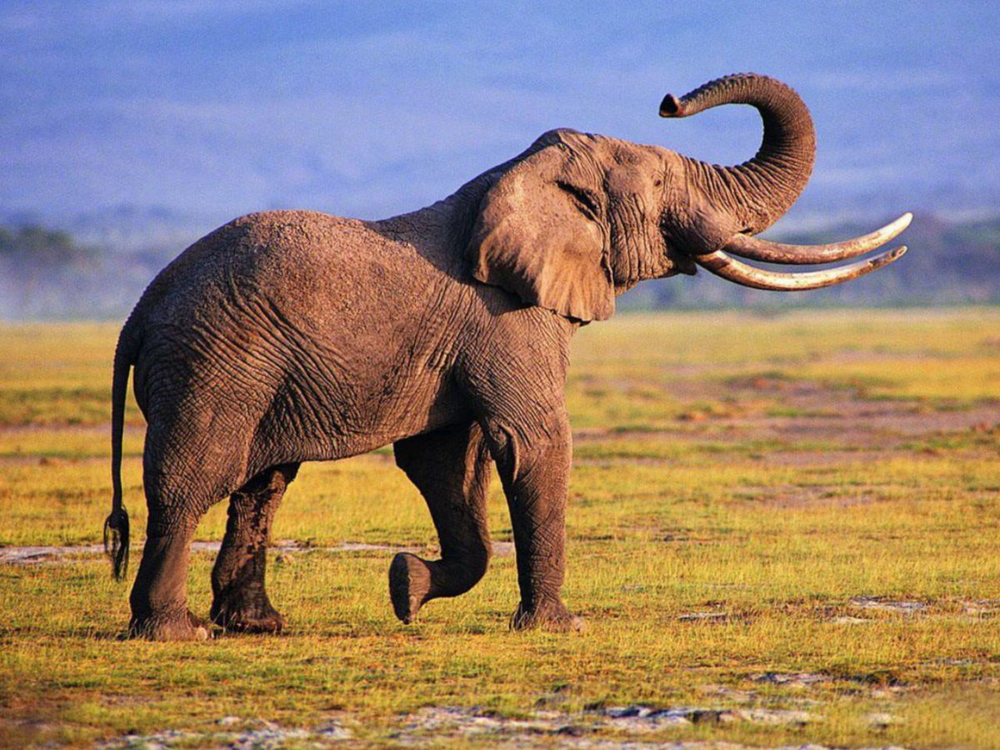
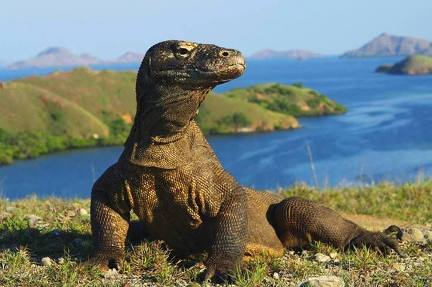
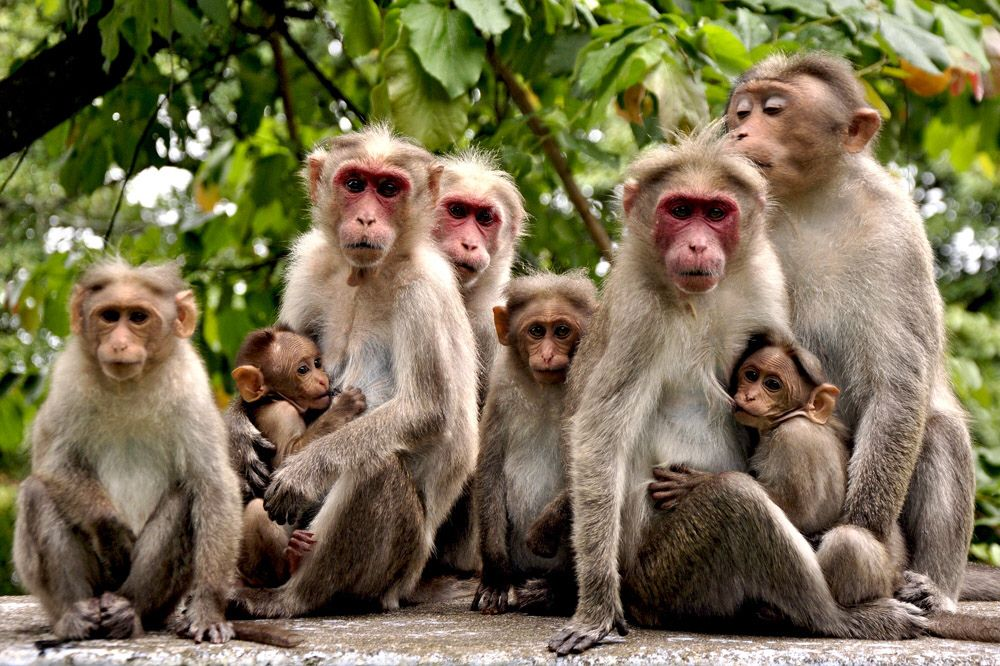
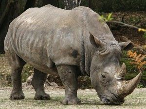
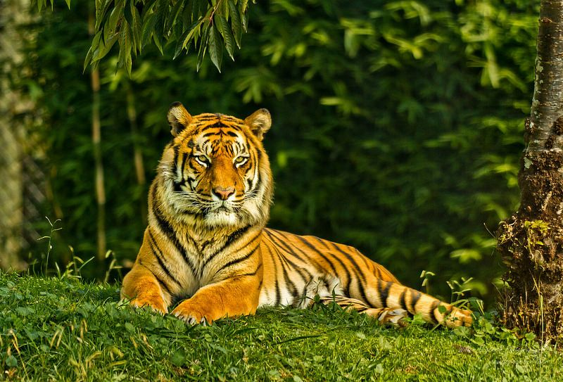
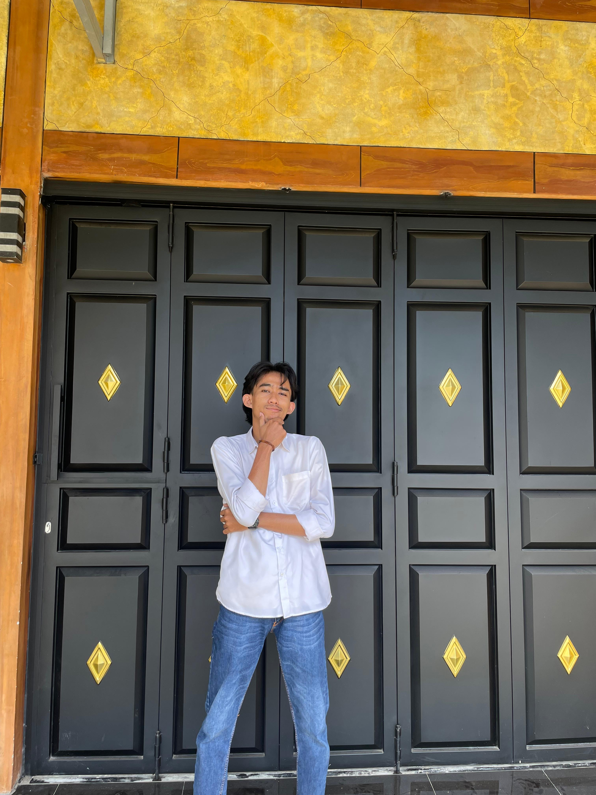
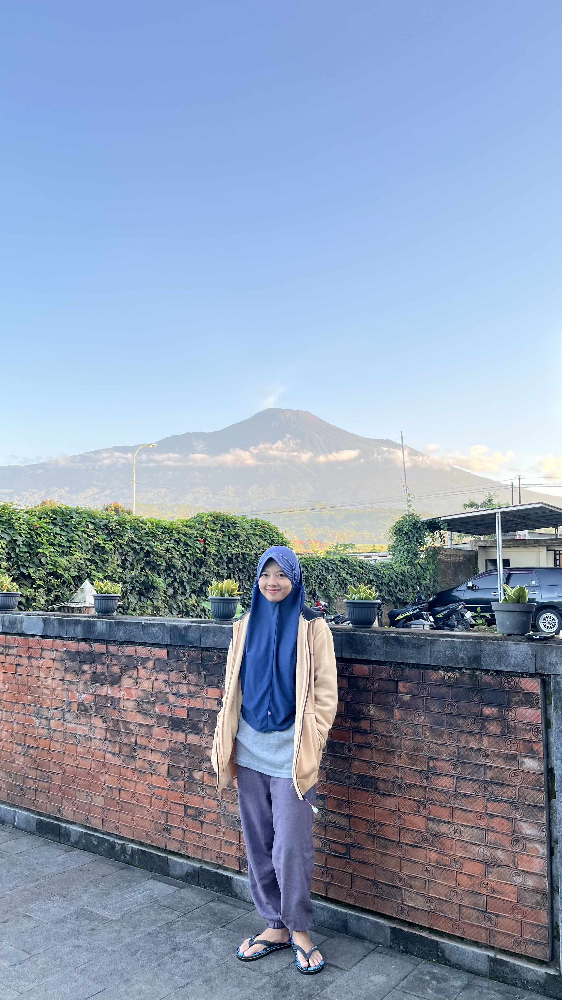
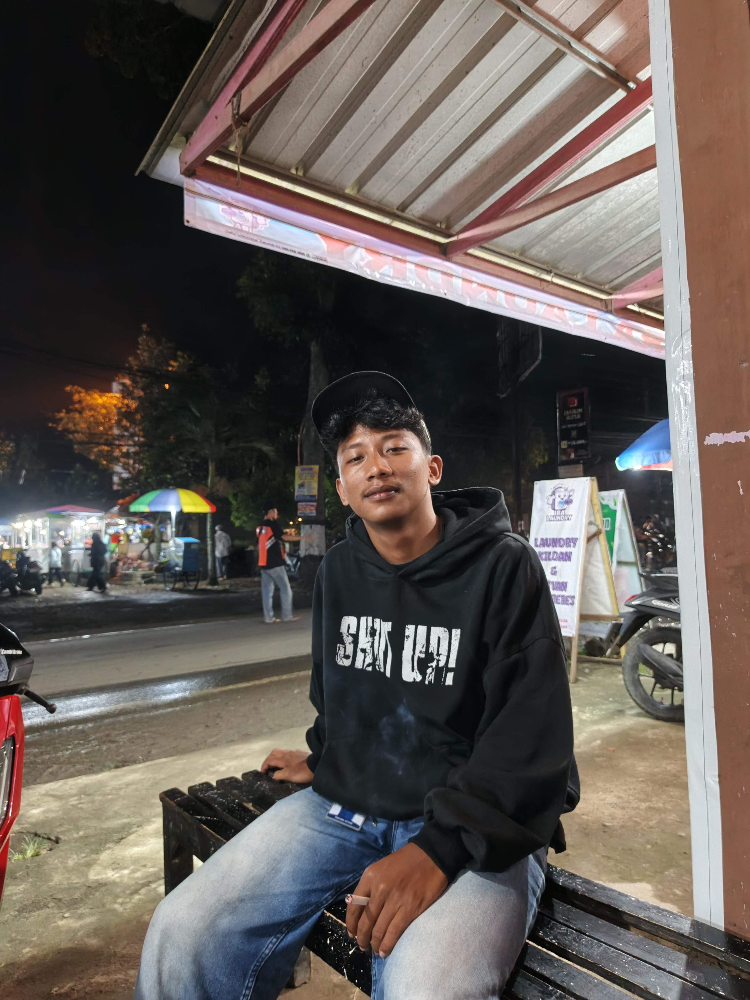

Mengenal Satwa Dengan Augmnetasi Reality

Mamalia terbesar di darat dengan belalai panjang dan gading kuat.

Kadal terbesar di dunia dari Pulau Komodo, Indonesia.

Monyet hidup berkelompok dan pintar menggunakan alat.

Hewan langka dengan satu tanduk, terancam punah.

Kucing besar terkuat, pemangsa puncak hutan tropis.

24EO60002

24EO10016

24EO10005